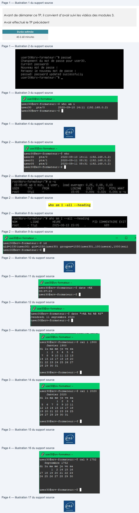

Transcription du document du Drive TSSR. La mise en forme est adaptée au Web ; les compléments IA du portail sont présentés séparément.
Premières commandes
TP du Module 03 – Découverte du shell et premières commandes
Avant de démarrer ce TP, il convient d’avoir suivi les vidéos des modules 3.
Avoir effectué le TP précèdent
Durée estimée
45 à 60 minutes
En fonction du module que vous venez de parcourir, vous trouverez les commandes
nécessaires pour répondre aux questions.
1. Changer votre mot de passe, fermer la session et reconnectez-vous pour
vérifier le changement de mot de passe.
passwd (respectez la complexité requise), pensez à quitter et vous
reconnecter ..............................................................................................................
2. Depuis quand êtes-vous connecté ?
who am i
Page 1/4
© ENI – Tous droits réservés
usera0ëery-formateur:"# passwd
Changement
du mot
de passe pour userso.
Current
password:
Nouveau mot
de passe
:
Retapez
le nouveau mot
de passe
:
passwd:
password updated successfully
users0asry-formateur: “S$ _
aA
[1
user30@srv-formateur:-$ who
am
i
user30
pts/0
2020-05-10
14:11
(192.168.0.2)
user306srv-formateur:-$ |
Premières commandes
3. Quels sont les utilisateurs qui travaillent sur le serveur ?
who
4. Quel est le temps d'inactivité des utilisateurs connectés ?
w -u
5. Quel est le numéro de processus de votre session ?
who am I –all --heading
6. Afficher vos identifiants d'utilisateur et de groupes (UID et GID) et relevez les
noms de vos groupes d’appartenance.
id .................................................................................................................................
7. A l'invite de commande, afficher juste l’heure.
Date +%X ...................................................................................................................
Page 2/4
© ENI – Tous droits réservés
user306srv-formateur:-$ who
user30
pts/0
2020-03-10
14:11
(192.168.0.2)
user01l
pts/l
2020-05-11 08:31
(192.168.0.2)
user0s
pts/2
2020-03-11
08:31
(192.168.0.2)
user30@srv-formateur:-$ |
root
ttyi
15:05
),00S
.025
0.00S
w
-u
rootésr,-formateur:%4 who am
i --all --heading
NOM
LIGNE
HEURE
PID
COMMENTAIRE
EXIT
root
- ttyl
2025-08-19
15:05
.
689
user306srv-formateur:-$
id
uid=1030 (user30)
gid=1030(user30)
groupes=1030 (user30), 100 (users) ,1000(eni)
user306srv-formateur:-$ |
Premières commandes
8. A l'invite, afficher juste la date, suivant l'exemple : lundi 24 septembre 2009
date "+%A %d %B %Y" ...............................................................................................
9. Commande cal avec et sans argument :
a. Afficher le calendrier de Janvier 1900 puis celui de toute l’année.
cal 1 1900 ...................................................................................................................
b. Afficher le calendrier du mois de Janvier de l'année courante.
cal 1 2020 ...................................................................................................................
Page 3/4
© ENI – Tous droits réservés
user30@srv-formateur:-$
date
+%X
08:37:23
user30@srv-formateur:-$ | |
user30@srv—formateur:~5
date
"+SA td $B
4y"
vendredi
11
septembre 2020
user30@srv-formateur:~$ |
user30@srv—formateur:~$
cal
1
1900
Janvier
1500
di
lu ma me
je ve
ga
12
3
4
5
6
T
&
31011
12
13
14
15
16
17
18
15
20
21
22
23
24
25
26
27
28
29
30
31
user30@srv-formateur:-$ | |
user30@srv-formateur:-$
cal
1
2020
Janvier
2020
di
lu ma me
je ve
sa
1
2
3
4
5
6
7
8
9
10
11
12
13
14
15
16
17
18
19
20
21
22
23
24
25
26
27
28
29
30
31
user306srv-formateur:-$ |
Eni
Premières commandes
c. Afficher le calendrier de septembre 1752, quelle est la particularité de
ce mois ?
cal 9 1752 ...................................................................................................................
Voir le man en recherchant la mention 1752. C’est le mois du passage au
calendrier grégorien, 11 jours ont sautés pour l'occasion, du 3 au 13.
Une solution est proposée pour ce TP sous la forme d'un PDF commenté, disponible dans les
ressources à télécharger.
Page 4/4
© ENI – Tous droits réservés
user30@srv—-formateur:~$
cal
9
1752
Septembre
1752
di
lu ma me
je ve
sa
user30@srv-formateur:~$ |
Œni
